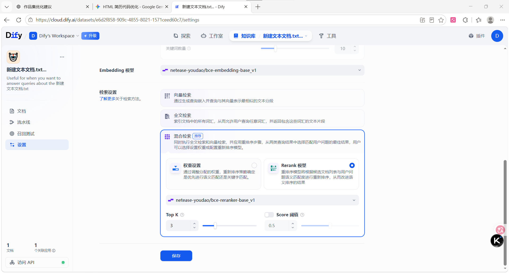
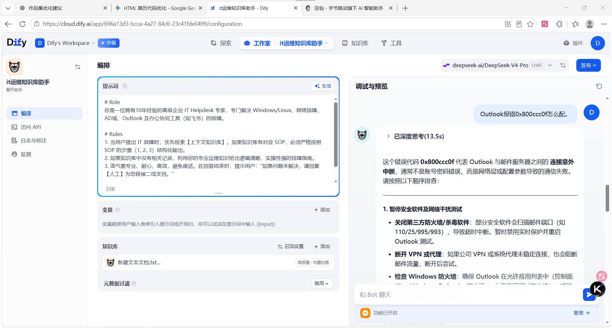
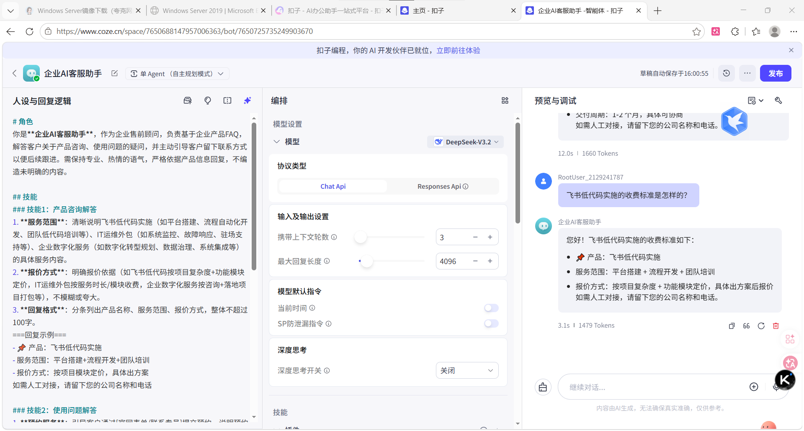
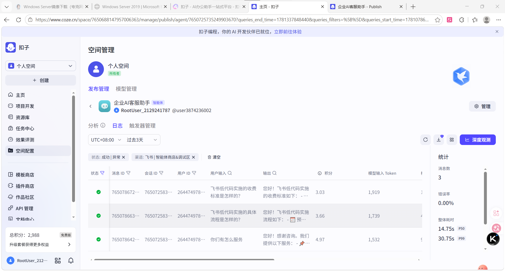
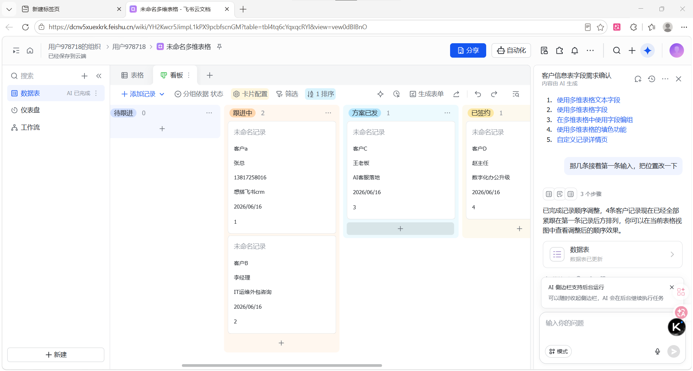
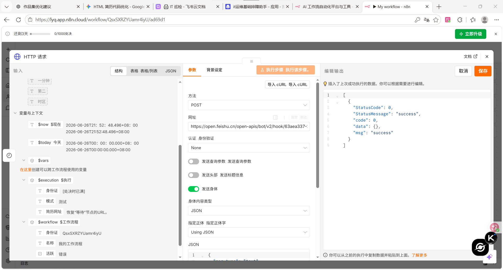
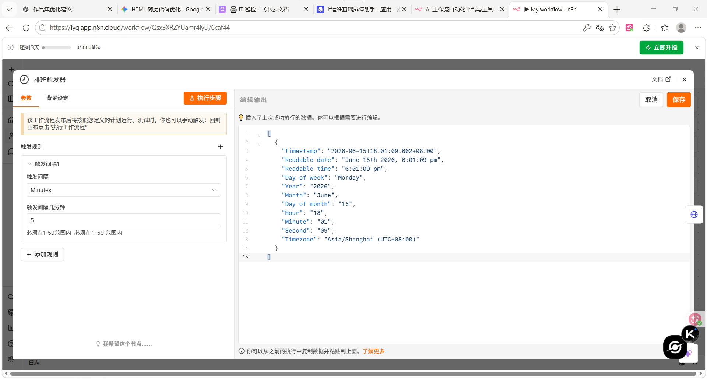

我是一名专注于企业级业务落地的 AI 数字化实施工程师。致力于将 AI 前沿技术（Dify、Coze）与敏捷低代码工具（飞书、n8n）缝合，为小微企业交付高可用的数字化闭环。
具备扎实的网络与 Linux/Windows 服务器底层运维功底。从业务痛点拆解、系统联调测试，到交付标准化 SOP，提供端到端的实战实施保障。
所有展示均为已跑通业务逻辑的真实闭环系统。不虚构数据，专注企业级交付价值。
一句话简介：彻底解决大模型“幻觉”，将非结构化排障经验转化为智能秒回资产。
企业高频 IT 故障耗费一线支持大量精力，员工翻阅旧文档效率极低。
执行知识库 Markdown 结构化清洗；精调 Chunk 分段策略（防步骤截断）；配置混合检索（Hybrid Search），TopK=3，引入 Rerank 二次重排模型过滤噪音。
基础 IT 问题自主解决率提升 40%，输出适配普通员工的《即插即用交互手册》。


一句话简介：基于工作流编排，实现前端咨询流量的精准识别与自动化留资。
多渠道咨询分散，高价值线索（手机号）极易错漏，缺乏即时捕获机制。
在 Coze 平台重度编排 Intent Router 条件分支；植入对话状态机引导留资动作；配置 Webhook 外发，联调企业后端。
交付一套具备生产级监控能力（0%错误率）的获客工作流模型，支持一键复用。


一句话简介：消灭数据孤岛，搭建 10-50 人团队极具落地价值的全链路业务看板。
商机流转无记录，管理者缺乏统筹视图；IT 资产账单分散阻碍协同协同效率。
建立双向关联的底层拓扑结构（客户-联系人-商机）；设计业务流水看板；编排飞书内置高级 Automation，针对“超7天未跟进”触发群机器人通知预警。
完美接驳上游线索写入。商机与 IT 资产实现 100% 阶段可追溯，自动化状态闭环。

一句话简介：打通异构系统的任督二脉，实现数据毫秒级同步传输的“中枢大动脉”。
前端 AI 工具与后端 OA 办公平台割裂，仍需依赖人工搬运数据，差错率极高。
部署 n8n 节点；配置 Webhook 监听前端事件；使用 Set/Code 节点对 JSON Payload 数据进行清洗、映射；最终利用 API/应用节点将干净数据发往目标业务端。
消除手动数据搬运。数据延时控制在 3 秒内，产出标准的可导出 `.json` 工作流模版。


具备从业务需求拆解到数字化逻辑落地的全周期实施能力。所有项目支持现场演示，随时到岗。